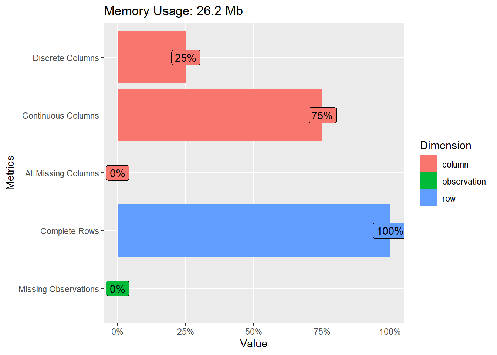
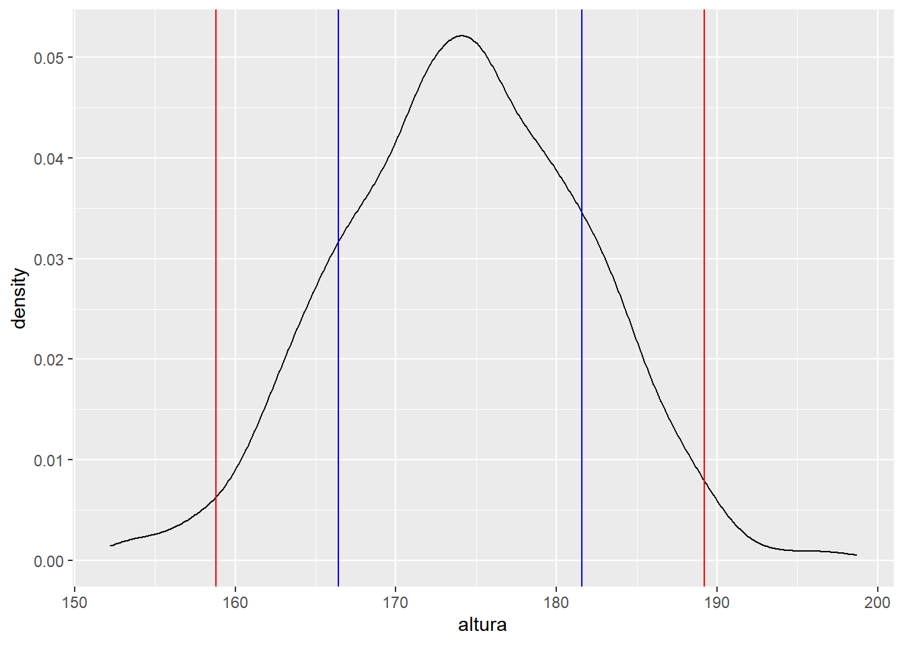
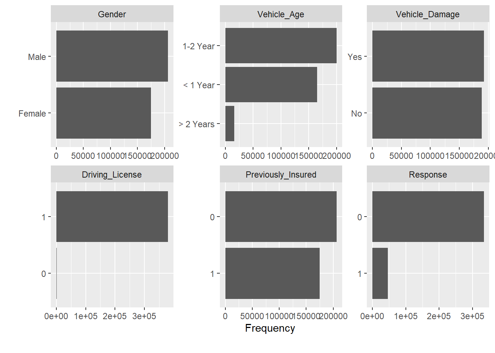
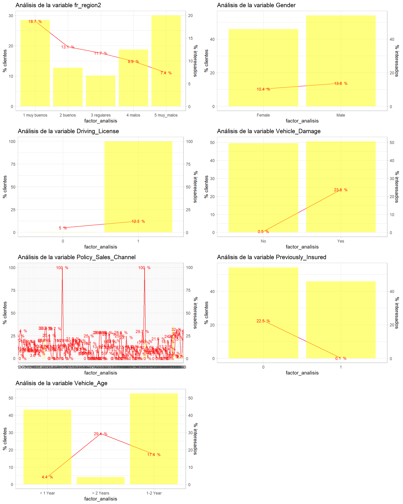
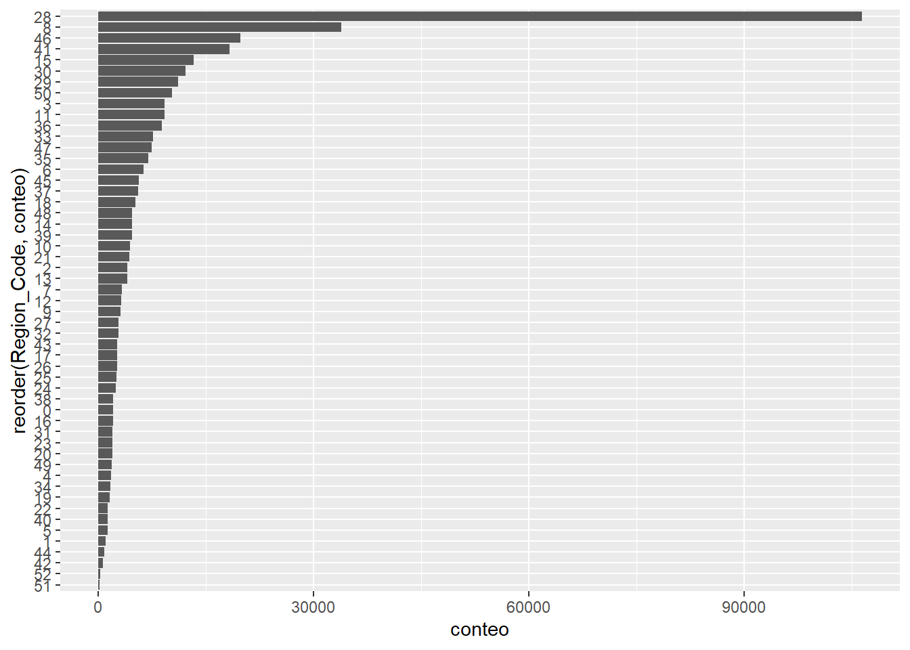

Capítulo 9 Análisis Exploratorio de Datos. EDA
Los capítulos 7 y 8 se resumen en éste mediante visualizaciones trabajadas en el capítulo 5. El análisis EDA (Exploratory Data Analysis) es el primer paso que ha de seguir un científico de datos y articula los temas tratados en el capítulo 2 ya que convertir datos en información implica que el científico de datos ha de preocuparse en saber como pueden estar estructurados sus datos, que tipo de variables los componen, el nivel al que se encuentran los registros, que problemas pueden presentar o como resumir información. Además, es necesario conocer los capítulos 3 y 4 para el manejo de variables y cruces de tablas y por este motivo el análisis EDA es la base, pero lo visto anteriormente son los cimientos.
Para realizar este tipo de análisis R dispone de distintas librerías, algunas de ellas son:
Se sugiere que sea el propio científico de datos quien debería tener sus propias herramientas descriptivas.
En este capítulo del ensayo se empleará la libería DataExplorer por rapidez de realización, sencillez de uso y fácil interpretación de la salida que ofrece. En la línea habitual se trabaja con el caso práctico de la campaña de venta cruzada de una empresa aseguradora.
library(tidyverse)
train <- read.csv("./data/train.csv")
head(train,5)## id Gender Age Driving_License Region_Code Previously_Insured Vehicle_Age Vehicle_Damage Annual_Premium
## 1 1 Male 44 1 28 0 > 2 Years Yes 40454
## 2 2 Male 76 1 3 0 1-2 Year No 33536
## 3 3 Male 47 1 28 0 > 2 Years Yes 38294
## 4 4 Male 21 1 11 1 < 1 Year No 28619
## 5 5 Female 29 1 41 1 < 1 Year No 27496
## Policy_Sales_Channel Vintage Response
## 1 26 217 1
## 2 26 183 0
## 3 26 27 1
## 4 152 203 0
## 5 152 39 0En el capítulo anterior ya aparecieron posibles problemas, no sólo de datos, también cuestiones de negocio a las que llegamos tras un análisis estadístico sencillo, por ese motivo se insiste en la idea de dar importancia al problema de negocio que se está abordando. El primer paso es conocer el número de observaciones y como son las variables del conjunto de datos, esto nos permite saber si es posible prescindir de algunas (observaciones y/o variables). Con DataExplorer se comenzará con la función introduce.
library(DataExplorer)
introduce(train)## rows columns discrete_columns continuous_columns all_missing_columns total_missing_values complete_rows
## 1 381109 12 3 9 0 0 381109
## total_observations memory_usage
## 1 4573308 27443752Este análisis se puede acompañar de una visión gráfica.
plot_intro(train)
El conjunto de datos tiene 381109 observaciones y 12 variables donde un 25% son factores frente al 75% de numéricas, todos las columnas están completas y no hay observaciones sin datos por lo que no es necesaria una limpieza previa. Observemos a continuación que variables tiene el conjunto de datos.
plot_str(train)Se observa que hay variables como Previously_Insured, Region_Code o Policy_Sales_Channel que son numéricas y serían susceptibles de ser factores. Los propios nombres de variables y sus descripciones tienen que ser de ayuda en estos primeros acercamientos. El siguiente paso es describir las variables en función del tipo. Si la variable es numérica se recomendaba la realización de histogramas, con plot_histogram se automatiza esta labor.
plot_histogram(train, ncol = 3)
Se disponen de 6 variables numéricas dispuestas en tres columnas con ncol=3 columnas. En este punto el científico de datos ya debe empezar a describir comportamientos buscando ese sentido de negocio. Veamos variable por variable:
AgeEs la edad del encuestado, la moda en 25 años aproximadamente con otro repunte en torno a los 45.Annual_PremiumPrima anual concentrada en valores bajos con algún registro con valor superior a 40000 €.IdIdentificador de cliente poco o nada puede aportar a la resolución de un problema con los datos.Policy_Sales_ChannelCanal de venta del contrato, no tiene sentido su histograma, ha de ser tratada como un factor.Region_CodeEs un código de región ha de ser tratada como un factor.VintageAntigüedad del contrato, no tiene una forma definida, de hecho sus posibles valores se parecen mucho al campo identificativo.
El primer acercamiento va buscando ese sentido y pretende utilizar dialéctica propia de negocio estudiando las formas, los posibles valores que toman las observaciones y las variables. Sin embargo, en este primer paso ya encontramos acciones y modificaciones interesantes.
train <- train %>%
mutate(Policy_Sales_Channel = as.character(Policy_Sales_Channel),
Region_Code = as.character(Region_Code))Las siguientes variables a analizar serán los factores, en el capítulo 7 se sugirió el uso de gráficos de barras, en DataExplorer se emplea la función plot_bar.
plot_bar(train)## 2 columns ignored with more than 50 categories.
## Region_Code: 53 categories
## Policy_Sales_Channel: 155 categories
En este caso DataExplorer nos arroja un warning que da una pista sobre un problema que tiene nuestro conjunto de datos de trabajo:
2 columns ignored with more than 50 categories. Region_Code: 53 categories Policy_Sales_Channel: 155 categories
Hay dos columnas que se considera innecesario representar, justo los factores que se acaban de crear. Estas variables son susceptibles de ser agrupadas pero no han de ser tratadas como numéricas. En cuanto al resto de variables:
GenderDescribe el sexo del encuestado, es un factor con dos niveles.Vehicle_AgeEsta variable define la antigüedad del vehículo, se ha agrupado en 3 niveles de un factor y por eso no es numérica pero es necesario observar el orden. Es un factor y el EDA ya nos advierte un posible problema, el orden, <1 1-2 y >2. En este caso toma el orden lexicográfico pone en primer lugar el nivel 1-2 Year y ha de estar en segundo lugar.Vehicle_DamageIndica si el vehículo tiene daños, a priori no parece presentar resultado anómalo.Driving_LicenseIndica si se dispone o no de carnet, apenas hay observaciones sin carnet, ¿tiene sentido ofrecer un seguro de automóviles a clientes sin carnet? Esos registros son susceptibles de ser eliminados.Previously_InsuredEs una variable numérica pero al tomar 2 valores se interpreta como factor.ResponseSerá la variable más relevante de nuestro conjunto de datos, toma valores 1/0 Si/No.
A continuación se resuelven algunos de los problemas planteados. Se empieza por la variable Vehicle_Age, para reordenar factores en R se cuenta con la función factor, se sugiere hacer:
table(train$Vehicle_Age)##
## < 1 Year > 2 Years 1-2 Year
## 164786 16007 200316train <- train %>% mutate(Vehicle_Age=factor(Vehicle_Age, c('< 1 Year','1-2 Year','> 2 Years')))
table(train$Vehicle_Age)##
## < 1 Year 1-2 Year > 2 Years
## 164786 200316 16007Sin embargo, en este punto se plantea una recomendación. Cuando se trabaja con datos en bruto y estos datos son analizados y clasificados es bueno crear una nueva variable y jugar con prefijos para determinar si esa variable está trabajada o no. En este caso, tratándose de un factor, se emplea el prefijo fr_ de factor reclasificado, en el ejemplo que se está trabajando:
train <- train %>% mutate(fr_vehicle_age = factor(Vehicle_Age, c('< 1 Year','1-2 Year','> 2 Years')))
train %>% group_by(fr_vehicle_age) %>% summarise(conteo=n()) %>%
ggplot(aes(x=fr_vehicle_age, y=conteo)) + geom_bar(stat = 'identity')
Con la variable Driving_License se plantean dos posibles soluciones, eliminar esos pocos registros sin licencia de conducción o directamente ignorar la variable. De momento no se eliminan esos registros. El resto de factores que a priori no parecen presentar problema se renombran.
train <- train %>% rename(
fr_gender = Gender,
fr_vehicle_damage = Vehicle_Damage,
fr_previouly_insured = Previously_Insured)Quedan pendientes los dos factores con un gran número de niveles. En el caso de Region_Code se sabe que los datos provienen de una aseguradora española y se tienen 52 códigos, es evidente que hace mención a las provincias españolas:
train %>% group_by(Region_Code=as.factor(Region_Code)) %>% summarise(conteo=n()) %>%
ggplot(aes(x=reorder(Region_Code,conteo), y =conteo)) + geom_bar(stat = 'Identity') + coord_flip() 
Se observa que los niveles 28 y 8 son los que más encuestados tienen, en el caso de las provincias españolas hacen mención a Madrid y Barcelona. En este caso se puede sugerir una agrupación con los 10 niveles más representativos y un resto.
provincias <- train %>% group_by(Region_Code) %>% summarise(conteo=n()) %>%
arrange(desc(conteo)) %>% mutate(fr_region_code = case_when(
row_number() <= 10 ~ Region_Code,
TRUE ~ 'Resto'))
train <- train %>% left_join(provincias)## Joining, by = "Region_Code"Otra posible agrupación tendría ese sentido de negocio provincial
train <- train %>% mutate(fr_region_code2 = case_when(
Region_Code == 28 ~ 'Madrid',
Region_Code == 8 ~ 'Barcelona',
TRUE ~ 'Resto'))Sin embargo, la mejor agrupación será aquella que una provincias con similar comportamiento ante un problema o ante la respuesta de un problema. En la misma situación está la variable Policy_Sales_Channel donde no tenemos ese conocimiento de negocio necesario para proponer una agrupación de niveles del factor. En capítulos posteriores se retomará este problema y se propondrá una solución.
El análisis EDA permite al científico de datos empezar el trabajo con los datos, pero esos datos se quieren emplear para resolver un problema y de momento sólo se está en una fase descriptiva. En cuanto a la librería DataExplorer además de tener diversas funciones para realizar estos descriptivos tiene la posibilidad de automatizar un reporte con esa aproximación mediante la función create_report. En cualquier caso y reiterando comentarios anteriores, se recomienda que el analista disponga de sus propias herramientas.